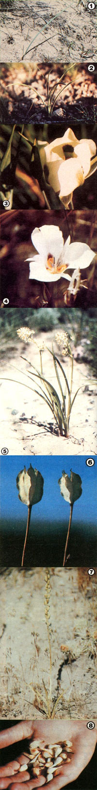

[1] The single grasslike blade of the sego lily is blue green in color. [2] But the new multi-leaved shoots of the lookalike death camass are bright green. [3] Looking like tulips, sego lily blooms come in many colors. [4] Here's one fully open. [5] Death camass flowers are either white, greenish white, and cream-colored. [6] The three-sectioned sego lily seed pods taste similar, either raw or cooked, to young peas. [7] All parts of the death camass are poisonous, including the seed pods. [8] Sego lily bulbs taste much like potatoes.